O Programa
O programa de capacitação IARTES tem como objetivo formar recursos humanos com habilidades para conceber, projetar, implementar e testar aplicações de software voltadas para a Internet, lançando mão de metodologias e ferramentas modernas, capazes de atender as demandas emergentes do mercado de desenvolvimento de software.
O público alvo será composto por alunos de cursos técnicos e superiores nas áreas de computação e afins, assim como por profissionais já formados.
Serão ofertadas 2 turmas com 30 vagas cada.
A capacitação terá carga horária total de 300 (trezentas) horas, sendo 195 (cento e noventa e cinco) destas, destinadas ao desenvolvimento do conteúdo teórico/prático em módulos (básico, intermediário e avançado) e 105 (cento e cinco) horas de atividades práticas (Hands-on). Além disso, vale frisar que as aulas teóricas serão lecionadas em 12 (doze) módulos e que os projetos serão acompanhados por 1 (um) professor e 1 (um) mentor, com a construção do pré-projeto ainda na fase das aulas teóricas.
Programa de Curso
O programa de Capacitação IARTES consiste em formar recursos humanos com habilidades para conceber, projetar, implementar e testar aplicações de software voltadas para a Internet.
Nivelamento: POO com Python - 30h
Introdução à Inteligência Artificial - 30h
Inteligência Artificial Aplicada - 30h
Introdução à Engenharia de Software - 30h
Teste, Verificação e Validação de Software - 30h
Programação para Dispositivos Móveis em Android - 30h
Gerência de Projetos com SCRUM - 30h
Teste Automático de Software - 30h
Ciência de Dados Aplicada a Teste de Software - 30h
Search Based Software Testing - 30h
Residência I (Execução do projeto final) - 45h
Residência II (Conclusão do projeto final) - 45h
Aprovação do Projeto Final da Residência - 15h
Equipe
O curso será ministrado por Doutores e Mestres com mais de 20 anos de experiência em desenvolvimento de software.
Contatos
Professora Laura Costa Sarkis
Coordenadora Geral do Programa
Local:
Rodovia BR 364, Km 04 - Distrito Industrial, Rio Branco - AC, 69920-900
Email:
iartes.pos.ufac@gmail.com
Parceiros
Conheça nossos parceiros que apoiam o programa IARTES

